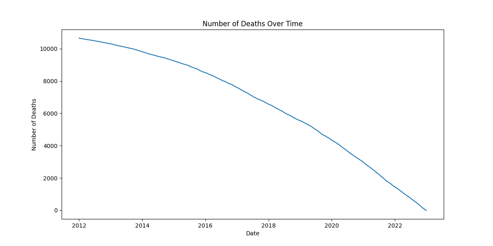

Introduction
The rise in drug use in Connecticut has raised serious health concerns, especially with the increase in accidental drug-related deaths. To tackle this concern, my project conducts a thorough data analysis of accidental drug fatality data in Connecticut from 2012 to 2022. Using the Python programming language and key libraries like Numpy, Matplotlib, SciPy, Pandas, and Seaborn, this study aims to uncover insights into the factors behind the alarming increase in drug-related fatalities.
The main goal of this project is to map and summarize evidence, providing a deep understanding of the changing patterns of drug-related deaths using open-source data. Through advanced data science techniques, I aim to break down the rising trend and support public health surveillance in understanding the complex dynamics of drug-related deaths. An essential part of the analysis includes incorporating toxicology results to identify and track specific drugs contributing to the crisis in Connecticut.
This project not only addresses immediate concerns about accidental drug deaths but also establishes a foundation for informed policy decisions and targeted interventions. Using data science, the aim is to contribute valuable insights that empower public health authorities to develop effective strategies for reducing the impact of drug-related fatalities in our community.
Data Analysis
Import Libraries
import numpy as np
import matplotlib.pyplot as plt
from scipy import stats
import pandas as pd
import seaborn as sns
#to ignore warnings
import warnings
warnings.filterwarnings('ignore')
Load Dataset
# Path to the dataset
url = r"C:\Users\shrey\Documents\1st_Sem_Study\Projects\Accidental_Drug_Related_Deaths_CT\Accidental_Drug_Related_Deaths_2012-2022.csv"
df = pd.read_csv(url)
# Printing the data
df.head(5)
Number of Deaths Over Time
Distribution of Age

Count of Individuals by Race

Distribution of Deaths by Sex

Count of Individuals by Location

Count of Drug Mentions in Death Certificates

Conclusion
Data source: Connecticut Data (2021). Accidental Drug-Related Deaths 2012-2021. Retrieved from https://data.ct.gov/Health-and-Human-Services/Accidental-Drug-Related-Deaths-2012-2022/rybz-nyjw
Additional information from Centers for Disease Control and Prevention (CDC) (2021, November 17). New CDC data show drug overdose deaths increased in 2020, driven by synthetic opioids. Retrieved from https://www.cdc.gov/nchs/pressroom/nchs_press_releases/2021/20211117.html
Color palette documentation is used for data visualization from https://seaborn.pydata.org/index.html
Reference retrieved from https://merishnasuwal.github.io/drug-deaths-data-analysis
Exploratory Data Analysis using Python, International Journal of Innovative Technology and Exploring Engineering (IJITEE), ISSN: 2278-3075, Volume-8, Issue-12, October 2019. Retrieved from https://www.researchgate.net/profile/Dr-Subhendu-Pani/publication/337146539_IJITEE/links/5dc70b124585151435fb427e/IJITEE.pdf
Github icon image is retrieved from https://fontawesome.com/icons/github?f=brands&s=solid
Contact
Thank you for checking my project
Feel free to reach out to me! I'm open to collaboration, feedback, and connecting with fellow enthusiasts. You can contact me at shreyabanik2k@gmail.com or connect with me on LinkedIn.